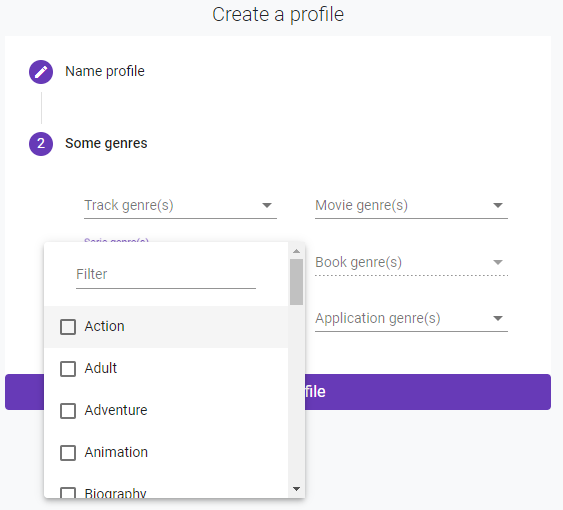
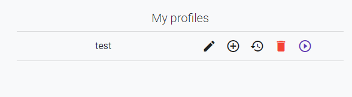
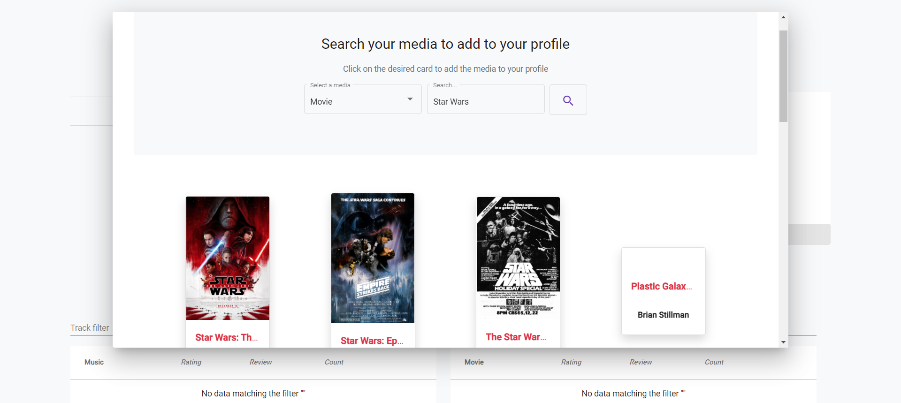
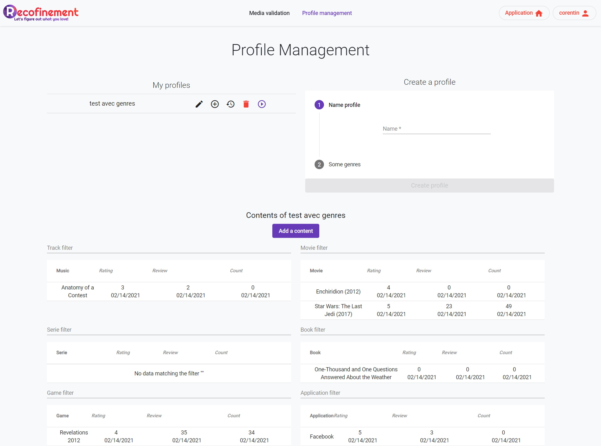
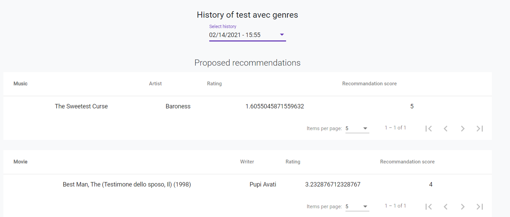

Sandbox
The sandbox is a tool provide to administator to analyse the recommendation engine through profiles created previously.
Test profiles
The admin can create profiles and attribute it liked genres.

Once profile is created, it appears in the "My profiles" section.

Content of test
Info
Click on "+" to access.
This feature allows the admin to add a media which was already in the Recofinement database.

Moreover, he can edit it's metadata (the rating, review, count) by clicking directly on the data.

Recommendation analysis
This feature allows the admin to get an history of each tests done by selecting a date.
